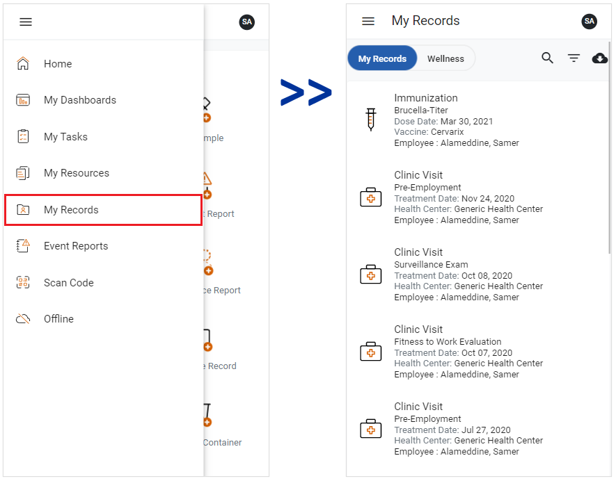

The My Records module provides an overview of your medical records within Cority.
Note: This functionality is only available for the LDAP and SSO authentication methods.
To access the module, click the side menu button and select My Records. The My Records view will open.

The My Records view has two views: My Records and Wellness.
The My Records view displays records of your allergies, managed cases, clinic visits, immunizations, medications, respirator fit tests, and lab results. Click or tap a record to open it.
The Wellness tab displays the following medical chart indicators: Body Mass Index, Blood Pressure, Fingerstick Blood Cholesterol, Fingerstick Blood Glucose, Framingham Risk Percentage, Framingham Risk Score, Height, Neck Circumference, Pulse, Respiration, SPO2, Temperature, Waist Circumference, and Weight. Click or tap a record to open it.